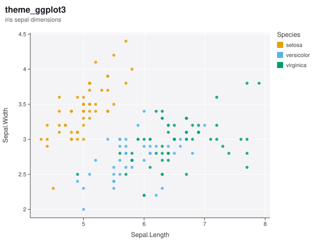
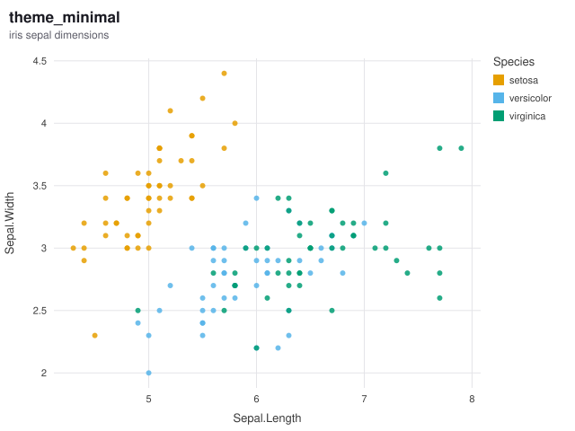
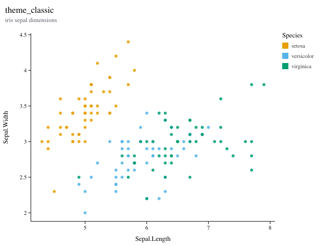
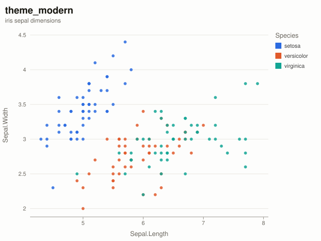
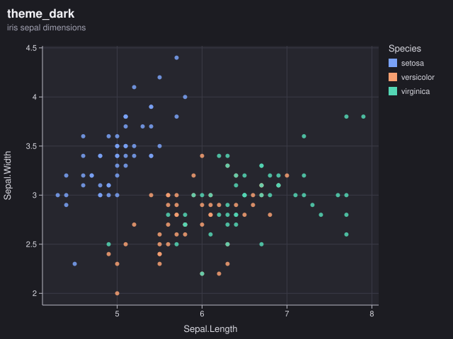
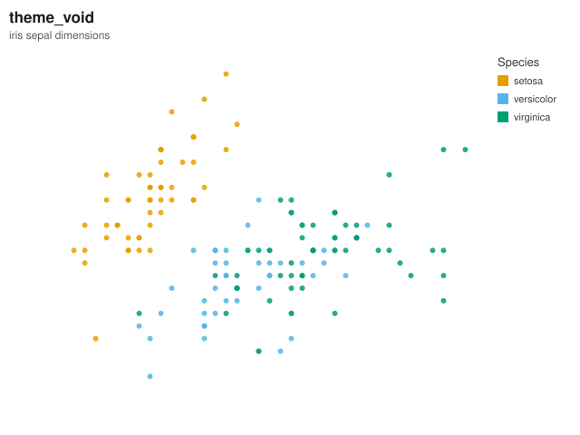

Themes
Six presets, and 35 individual settings you can override with theme(). Every setting travels inside the geometry buffer, so the static and interactive targets always agree.

theme_ggplot3() — The default: a softly tinted panel with white gridlines.
theme_minimal() — No panel fill, light grey grid, no axis lines or ticks.
theme_classic() — White panel, black axes, no grid, serif type - the statistical-journal look.
theme_modern() — Editorial styling: large title, horizontal rules only, a brighter palette.
theme_dark() — Dark background with a palette tuned for it.
theme_void() — No chrome at all - for treemaps, networks, and sparkline-style output.Customizing
Override any setting on top of any preset. base picks the preset to start from; everything else is applied over it.
ggplot3(cars, aes(speed, dist)) + geom_point() +
theme(
base = theme_minimal(),
panel_fill = "#FFF8F0",
grid_major_x = FALSE,
plot_title_size = 22,
legend_position = "bottom",
point_palette = c("#2B6BE0", "#E05A2B", "#12A594")
)Colour settings accept any R colour specification - a name like "steelblue" or a hex string. An empty string "" means do not draw this element, which is how grid_color = "" removes gridlines entirely.
Every setting
| Setting | Default |
|---|---|
| Colors | |
background | #FFFFFF |
panel_fill | #F4F4F6 |
grid_color | #FFFFFF |
grid_color_minor | |
axis_color | #3A3A3A |
label_color | #3A3A3A |
title_color | #1A1A22 |
subtitle_color | #5A5A66 |
strip_fill | #E4E4EA |
strip_color | #2A2A33 |
legend_text_color | #3A3A3A |
panel_border | |
| Typography | |
font | Helvetica, Arial, sans-serif |
title_font | |
tick_font_size | 11 |
title_font_size | 13 |
plot_title_size | 17 |
plot_subtitle_size | 12 |
caption_size | 10 |
strip_font_size | 11 |
legend_font_size | 11 |
title_face | bold |
| Structure | |
tick_len | 5 |
grid_major_x | TRUE |
grid_major_y | TRUE |
axis_line_x | TRUE |
axis_line_y | TRUE |
ticks_x | TRUE |
ticks_y | TRUE |
axis_text_x | TRUE |
axis_text_y | TRUE |
axis_title_x | TRUE |
axis_title_y | TRUE |
legend_position | right |
point_palette | — |
gradient_low | |
gradient_high | |